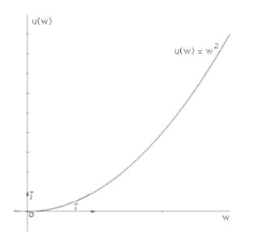
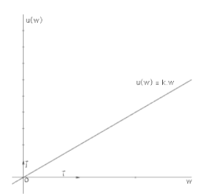
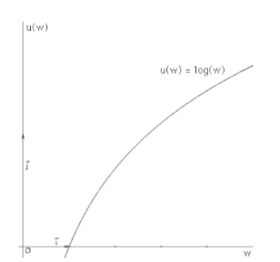

We can measure the degree of risk preferences.
A person's degree of risk aversion can be measured as her willingness to pay (or to accept a lower expected utility) in order to avoid a risk.
By theory (Arrow-Pratt measure):
Provided that an agent's utility function u(x) is twice continuously differentiable, her risk aversion at any point x can be measured as
-u"(x)/u'(x)
Hence, a person with the utility function u1 is more risk averse at a point x than one with utility function u2 if and only it
-u1(x)/u1(x)-u2(x)/u2(x)
We can define 3 types of individuals by their risk attitudes:
If a person's utility of the expected value of a gamble is less than their expected utility from the gamble itself, they are said to be risk-loving.
Truly risk-loving people should be willing to stake all their assets on a roll of dice.
Convex Bernoulli utility function captures risk/loving behavior.

Example:
EU = Pheads* (Uhead)2 + Ptail* (Utail)2 = 0.5 * $102 +0.5 * $20² = $250
u(EV) = EV² = $152 = $225
If a person's utility of the expected value of a gamble is exactly equal to their expected utility from the gamble itself, they are said to be risk-neutral.
Most financial institutions behave in a risk-neutral manner while investing.
Linear Bernoulli utility function captures risk-neutral behavior.

Example:
EU: = Pheads * k * Uhead + Ptail Utail = 0.5 * 2 * $10 + 0.5 * 2 * $20 = $30
u(EV) = 2 * EV = $15 * 2 = $30
If a person's utility of the expected value of a gamble is greater than their expected utility from the gamble itself, they are said to be risk-averse.
Truly risk-loving people should be willing to stake all their assets on a roll of dice.
Concave Bernoulli utility function captures risk-averse behavior.

Example:
EU = Pheads * log(Uhead) + Ptail * log(Utail) = 0.5 * log($10) + 0.5 * log($20) = $1.15
u(EV) = log(EV) = log($15) = $1.176